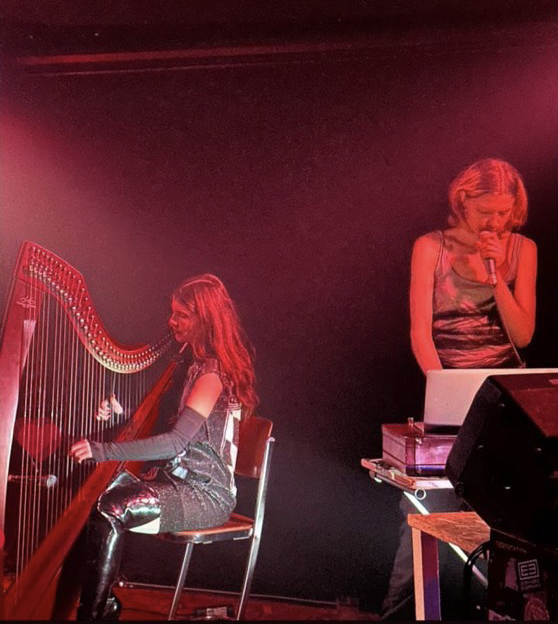

Darling, 2023
ink on paper, poetry, digital photogaphy prints, iso tape, plasitc pockets and wire
showed together with my video edit "Dodge" 2023, in Postproductions at studiengalerie-1357 with The Institute of Scene Experiments initiative by Nikhil Vettukattil
how leisure always imitates labor, Kunstverein München, 2023
performance and installation, conceived by Jan Kunkel, Vera Karlsson, and Alie O.

book/collage with digital and analogue photo of inside residental building, with cut-up poetry
in compound, bbberlin

FET MIASMA MIS, a TLC.23 event with participants on the poster, an exhibition by Kiera Fox and Katie Shannon, at Le Bourgeois, 3236rls London
wrapped shoe, prototype design

During 2023 I produced music with harp and voice by Livia Rasku, 'Stringbabe', premiered at Garcia NRG a music event organised by me
at West Germany in Berlin and also played at Loop Hole in Berlin, we released an demo album on cd for Gaza fundraiser